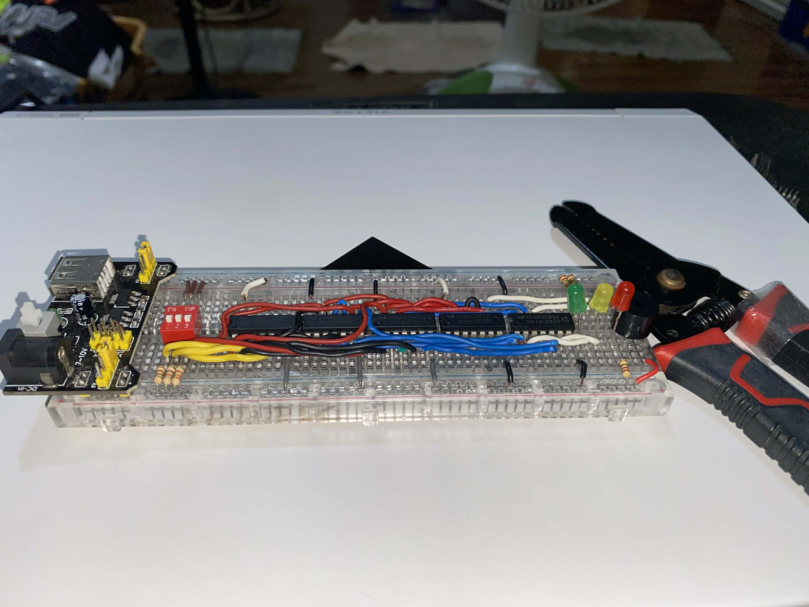
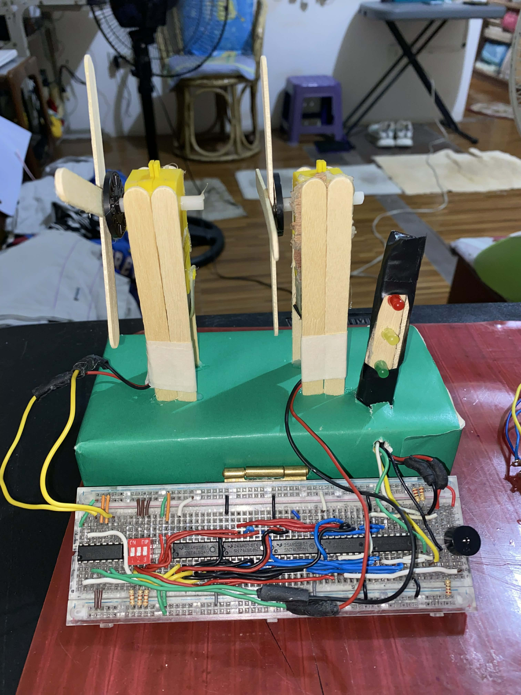
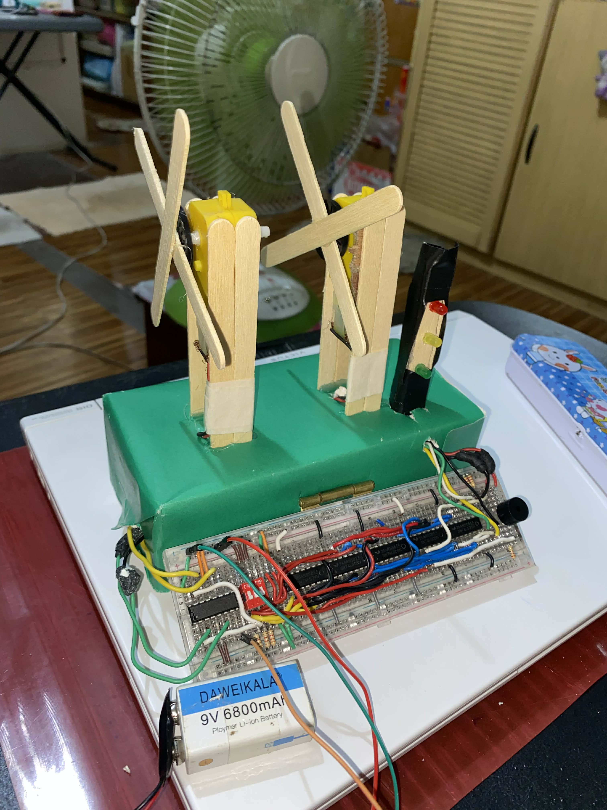

Gameshow LCD Display

Gameshow LCD Display 2

Initial System

Final System



This is a wind speed monitoring system designed using basic digital logic gates and a DIP switch as the input source. The DIP switch provides a 3-bit binary signal that represents different wind speed levels. The logic circuit processes these binary inputs and activates corresponding outputs such as indicator lamps and a siren based on predefined safety conditions. Green and yellow lights indicate normal to moderate wind speeds, while a red light and siren warn users when dangerous wind speeds are detected.